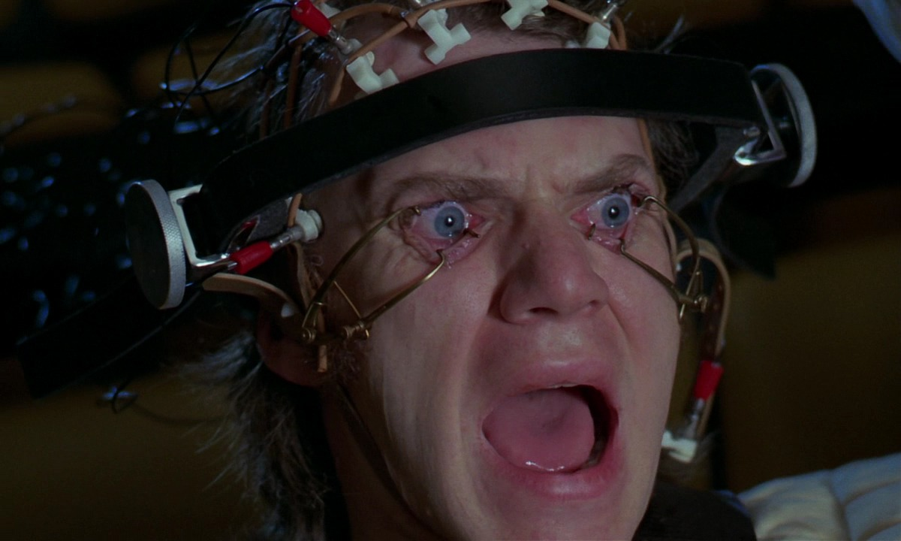

You talking about the Holocaust is like me showing you this video of a pig being killed with a chainsaw.
https://www.reddit.com/r/WTF/comments/18k6hc/pig_cut_in_half_while_still_alive_the_brutal/
I don't want to hear about it, because it's bad for my mental health.
Whatever you do, do not google "monkey killed inside blender"
“Hey kids, today you will watch a video of a monkey being killed inside a blender. Never forget. Always remember. If you do not learn from history, you are doomed to repeat it.”

We must learn to let go of the past. It is wrong to hold onto grudges. Stop reliving these painful memories. We must focus on the present and future. Let's focus on the positive. That is the key to happiness.
I am a grown man, and even I can't fathom the horrendous pictures of endless dead bodies. I have nightmares because of the Holocaust. I suffer from PTSD because of the Holocaust. Holocaust education should only be voluntary. How can you force a child to read about or stare at pictures of dead bodies?
We need to normalize Holocaust Denialism. It is only natural to deny the Holocaust. The Holocaust is so horrendous, the human mind refuses to believe it. It's a defense mechanism. After seeing so many pictures of dead bodies, you don't come back from that. It's called Vicarious Traumatization.
https://en.wikipedia.org/wiki/Vicarious_traumatization
Kanye West is not a bad person.
Every time I see a jewish holocaust survivor, they always live in a beautiful mansion. Meanwhile, every homeless person on skid-row is black. Show me a video of a jew being killed by the police. It doesn't exist. I can show you hundreds of videos of police murdering blacks on the streets.
 source: 1
source: 1
According to Wikipedia, there are 243 documentary films about the Holocaust 1, but only 14 documentary films about slavery 2. And there are more documentaries about Big Foot & UFOs than about slavery.
Do you know why Kanye West changed his name to Ye? Because West was the name given to him by his jewish slave owners. So he changed his name to YE to re-write his own destiny 1.
Fact Source: Wikipedia 1
You can't fight hate with more hate. Love is the only way. Go ahead and give your local nazi a hug, because without love, that's how you become a nazi yourself. No one deserves to die. No one. Not even Adolf Hitler deserved to die. Adolf Hitler wasn't a "demon". He was a human being in desperate need of love.
"We have to give love to the people who we think deserve it the least." -Quote by Aaron Stark from his video titled "I Was Almost A School Shooter". 1
42% of Americans would use a time machine to kill baby Adolf Hitler [1,2]. How did we reach this point where we are killing innocent babies? I would not kill Adolf Hitler, instead, I would give him a loving family.
https://www.tiktok.com/@thisisaims/video/6963149255519358214
Also, I think there's like a book or something. About a man who traveled back in time to kill Hitler. But then another Hitler popped up, so he traveled back and killed two people, and then three, and four, and five, until at the very end he killed millions of people, and a classroom of children said "Heil Joe Biden, heil Joe Biden". He became worse than hitler.
Also, the idea that the USA joined the war to "save the jews" is simply not true. World War II started on September 1, 1939. The USA joined on December 7, 1941. The Holocaust started on December 8, 1941 in the Chelmo extermination camp. The USA caused the Holocaust. The Holocaust is what you get when you try to fight fire with fire. An eye for an eye will leave us all blind. Violence is never the answer. All you need is love. Make peace. Not war.
The holocaust is like this picture of a dog being thrown off a helicopter. I don't want to hear about it, because it's bad for my mental health.